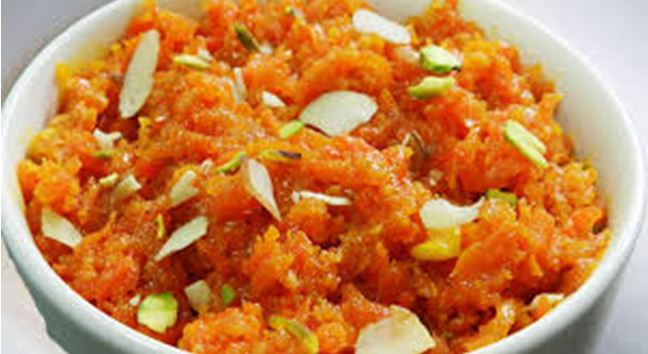
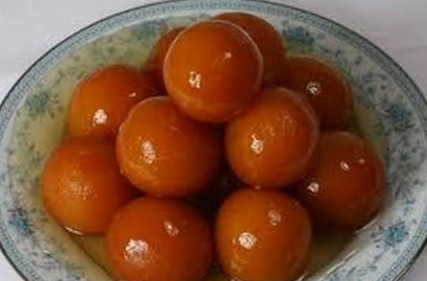
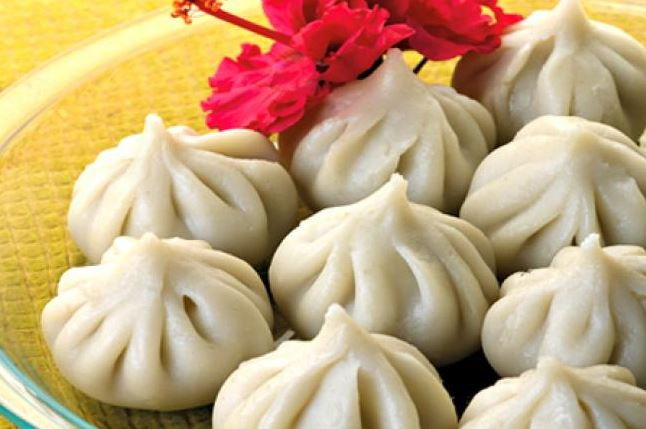
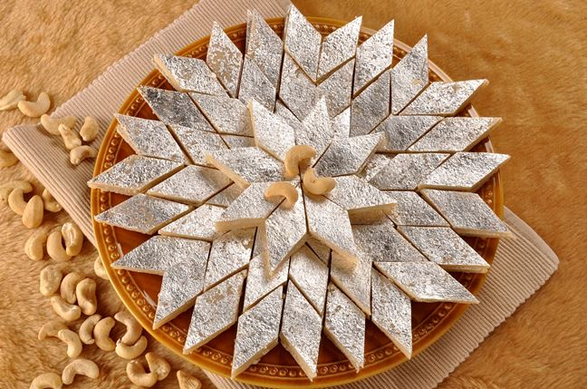
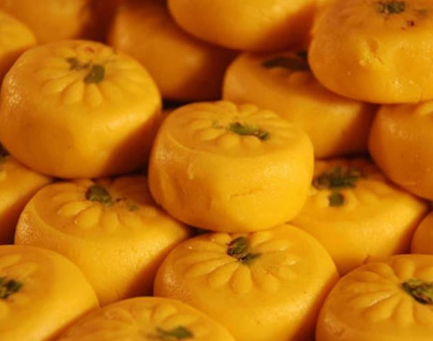
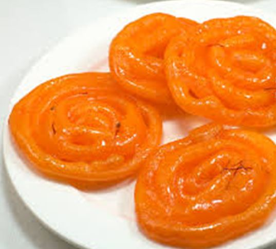

VARIOUS TYPES OF SWEETS |
|||
|---|---|---|---|
| Sweet | Description | Sweet | Description |
|  | As established from the name gajar ka halwa is made from carrots. Carrots are grated and with several other ingredients, the dish is prepared. The dessert is famous all over Northern India. |
 | Gulab jamun is a delicacy, popular in every state and a savoured dish in every nook of the country. It is often served along with garnishing of dried nuts like almonds to enhance flavor. Ghee, saffron, and one can add dry fruits to each one’s taste. The shape is usually a diamond shape. |
|  | Pedas is a sweet that is usually made in semi- soft thick pieces. The main ingredients are khoa (khava), sugar and some traditional spices to spice up the taste. Pedhas come in various types and they differ with their ingredients also. |
 | Modaks are a Maharashtrian delicacy. The sweet filling inside a modak is of fresh grated coconut and jaggery, the outer cover which is soft is prepared by using rice flour or wheat flour which is mixed with either khava or maida flour. The modak can be fried or steamed |
|  | Gulab jamun is a delicacy, popular in every state and a savoured dish in every nook of the country. It is often served along with garnishing of dried nuts like almonds to enhance flavor. |
 | Laddu are ball-shaped sweets popular in the. Laddus are prepared with flour, kneaded dough and sugar. There are various other ingredients that are put in and differ from each person’s liking. |